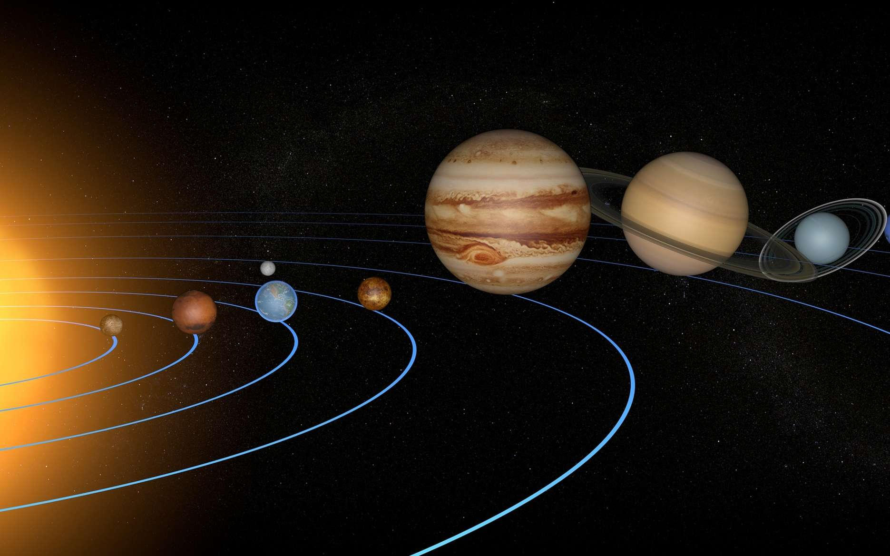
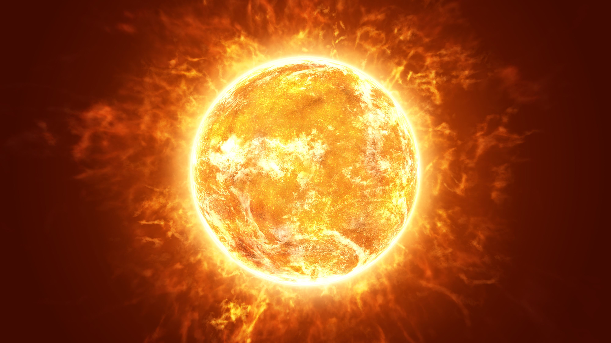
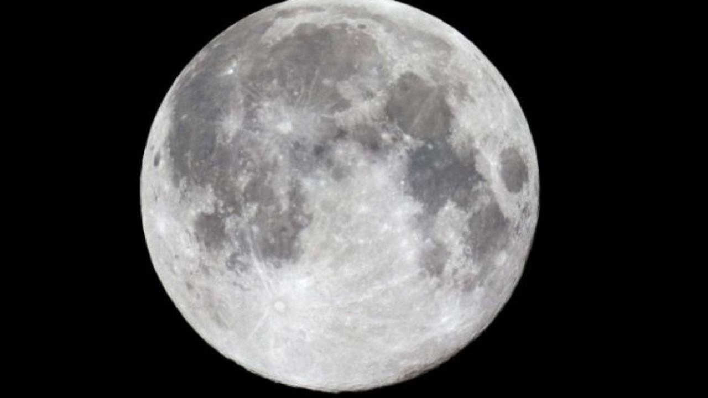

Introduction

Le Système solaire (avec majuscule), ou système solaire (sans majuscule), est le système planétaire auquel appartient la Terre. Il est composé d'une étoile, le Soleil, et des objets célestes gravitant autour de lui : les huit planètes confirmées et leurs 205 satellites naturels connus (appelés usuellement des « lunes »), les cinq planètes naines et leurs neuf satellites naturels connus et les milliards de petits corps (la grande majorité des astéroïdes et autres planètes mineures, les comètes, les poussières interplanétaires, etc.). Le système solaire fait partie de la galaxie appelée Voie lactée.
Le soleil

Le Soleil est l’étoile du Système solaire. Dans la classification astronomique, c’est une étoile de type naine jaune d'une masse d'environ 1,989 1 × 1030 kg, composée d’hydrogène (75 % de la masse ou 92 % du volume) et d’hélium (25 % de la masse ou 8 % du volume)10. Le Soleil fait partie de la galaxie appelée la Voie lactée et se situe à environ 8 kpc (∼26 100 a.l.) du centre galactique, dans le bras d'Orion. Le Soleil orbite autour du centre galactique en 225 à 250 millions d'années (année galactique). Autour de lui gravitent la Terre (à la vitesse de 30 km/s), sept autres planètes, au moins cinq planètes naines, de très nombreux astéroïdes et comètes et une bande de poussière. Le Soleil représente à lui seul environ 99,854 % de la masse du Système solaire ainsi constitué, Jupiter représentant plus des deux tiers du reste.
La lune

La Lunenote 1 est l'unique satellite naturel permanent de la planète Terre. Il s'agit du cinquième plus grand satellite naturel du Système solaire et du plus grand des satellites planétaires par rapport à la taille de la planète autour de laquelle il orbite. Elle est le deuxième satellite le plus dense du Système solaire après Io, un satellite de Jupiternote 2. La Lune est en rotation synchrone avec la Terre, lui montrant donc constamment la même face. Celle-ci, appelée face visible, est marquée par des mers lunaires volcaniques sombres qui remplissent les espaces entre les hautes terres claires — certaines atteignant 9 km d'altitude — et ses cratères d'impact proéminents. Réciproquement, elle possède une face cachée, qui présente moins de mers mais beaucoup plus de cratères, dont le bassin Pôle Sud-Aitken, le plus grand du satellite et l'un des plus grands du Système solaire par son diamètre de 2 500 km. Elle est dépourvue d'atmosphère dense et de champ magnétique. Son influence gravitationnelle sur la Terre produit les marées océaniques, les marées terrestres, un léger allongement de la durée du jour et la stabilisation de l'inclinaison de l'axe terrestre.